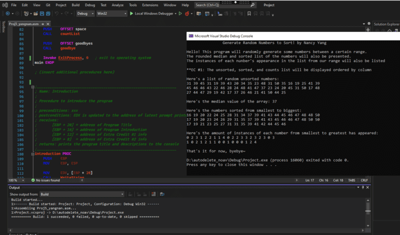

This is an example of handwritten calculations for Computer Assembly code. There are
some
conversion math and keeping track of values in each register.

In this assembly code execution, the system randomly generated a set of number from a
limited range. It also ordered the numbers and counted how many instances of each number.
As a Kinesiology major, I was able to explore different tools to calculate muscle mass
and fat mass.
I find these different instruments of tracking exercise progress very fascinating.
In my free time, I learned how to make videos on Final Cut Pro. I liked how you can
adjust different features or add things to enhance your videos.I was determined to learn machine learning, and it turned to a much more ambitious
endeavor than I initially imagined.
I had to first learn python and then learn how machine learning models works. In this picture,
it shows a few of the many submissions I revised to improve my model.
The lower the score, the more accurate the model. This was for the Housing Prices Competition in
Kaggle.
I accidentally ripped my favorite pair of jeans at work. I decided to hand sew them back
together since it is too small to fit in my sewing machine.
Furthermore, I used a water bottle to help hold its shape and to provide a better surface for me
to sew on.
This is a portfolio project for class using object-oriented programming. We had to
simulate a game of Othello in python.I didn't like the bottom cut of these jeans, so I hemmed it up a little using my sewing
machine to better fit my style. I double majored in Kinesiology and Chinese during my bachelors.I interned for a startup that was part of HAX Shenzhen, China during my Capstone
program. This is outside of Huaqiangbei's electronics market.I did my Chinese Capstone project on Osteoporosis. My presentation was in Chinese and it
was recorded. This is a picture of one of the most important bones of the body: the skull.
This is a first draft of a UX design I made for my project for class. I'm exploring
different ways to make it easier for people to host and join events.

 Nancy Yang
Nancy Yang